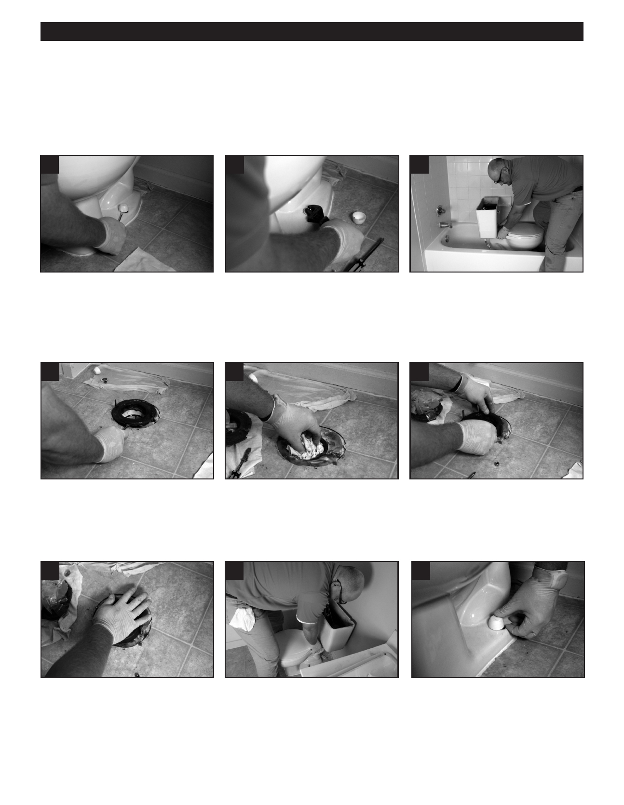

PA RT I C I PA N T R E S O U R C E G U I D E
Fixing a Leaky Toilet (continued)
How-to Steps: Applying a Wax Seal at Toilet Base
One way to check if you have a seal problem is to mix food coloring in the toilet tank, flush, mix again, and flush. Then watch
to see if the colored water appears at the base of the toilet. If so, you need to apply a new seal:
1
2
4
1. (See “Replacing a Flush Valve
2. Unscrew the nuts holding the base
4. Set the toilet base aside.
on page 64”)
of the toilet to the floor carefully cut
the caulking that seals the toilet to
the floor.
3. Rock the toilet until the seal breaks.
5
6
8
5. Remove the wax seal with a putty
6. Temporarily cover the drain with old
8. Remove the temporary seal over the
knife or screwdriver.
rags or towels to prevent the gases
flange.
from escaping.
7. Clean the floor and toilet surfaces so
they are free of wax and water.
9
10
11
9. Attach the new wax seal and sleeve.
10. Press down firmly on the wax seal. 11. Position toilet over the floor bolts
(Without deforming the surface of
and set it in place.
the wax ring.)
12. Push hard on the bowl to secure
the wax seal.
13. Reattach nuts and caps.
Do not over tighten.
67